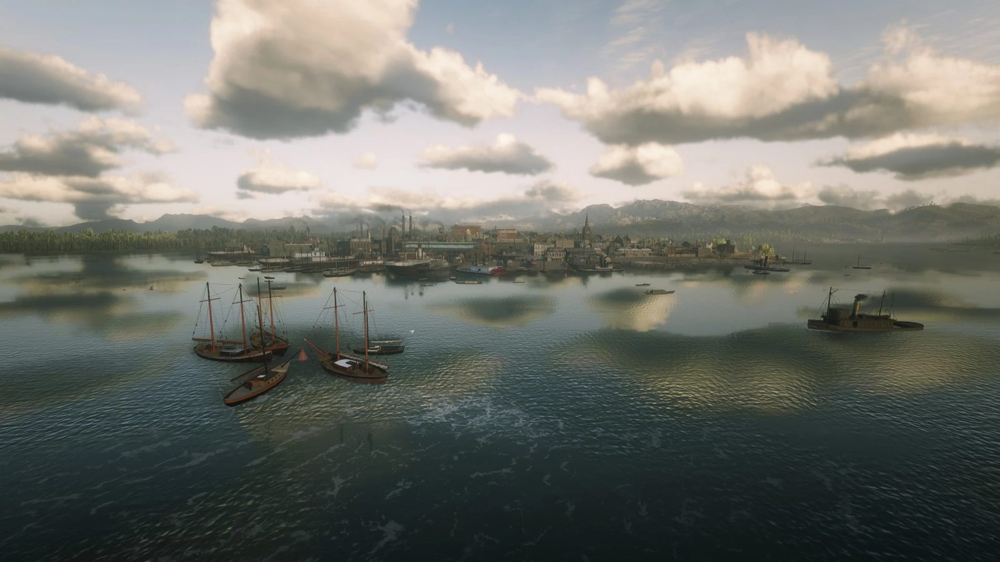
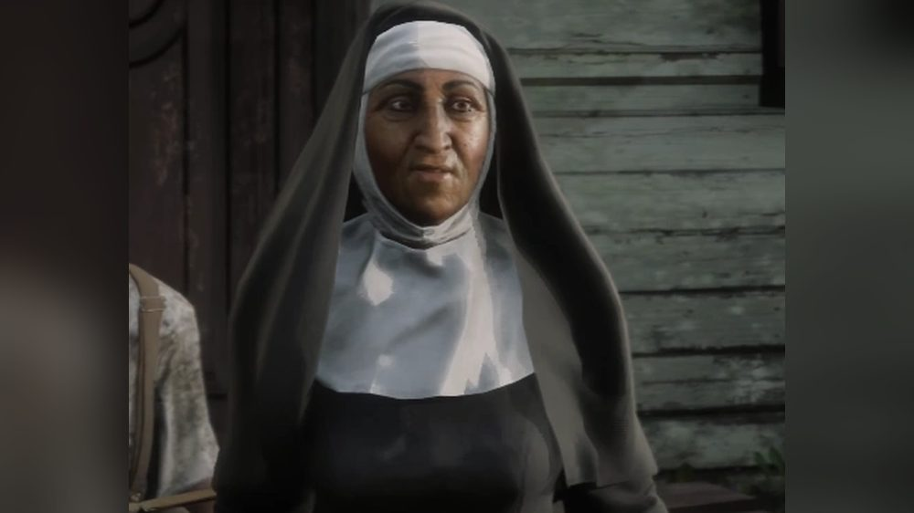
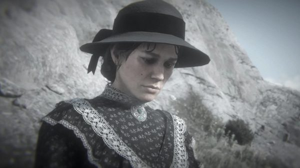
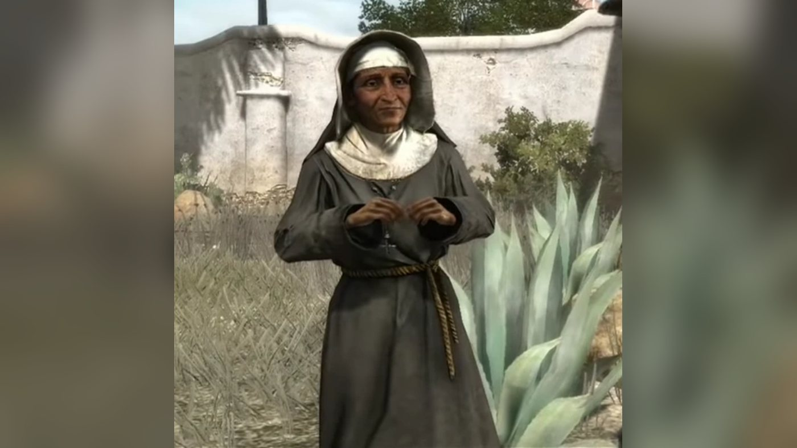

Character · Saint Denis
Sister Calderón
Sister Calderón is a Catholic nun in Saint Denis in Red Dead Redemption 2 (2018), set in 1899. She teaches street children to read with Brother Dorkins and collects money and food for the poor. Arthur Morgan recovers her stolen crucifix in chapter 4 and gives to her collection in an optional mission. If he has completed that mission and his honor is high, he meets her again at Emerald Station in chapter 6, as she leaves for a mission in Mexico; there he tells her that he is dying. Otherwise, Orville Swanson appears in her place.
In Red Dead Redemption (2010), set in 1911, the mother superior of the Las Hermanas convent asks John Marston for alms, and in the non-canon Undead Nightmare she helps him against the plague. The Red Dead Wiki treats the two as one character. According to cast listings, Irene DeBari voices her in Red Dead Redemption 2.
- Name
- Calderón (no first name in the games)
- Also called
- Sister; Mother Superior; Mother Superior Calderón (Undead Nightmare, Red Dead Wiki)
- Born
- Not given in the games
- Status
- Alive in 1911 (Red Dead Wiki identification)
- Nationality
- Not given in the games
- Occupation
- Catholic nun in Saint Denis (1899); mother superior at Las Hermanas (1911, Red Dead Wiki)
- Church
- Saint Denis; the Church of the Holy Blessed Virgin, according to the Red Dead Wiki
- In 1911
- Las Hermanas convent, Perdido, Nuevo Paraíso (Red Dead Wiki)
- Family
- Her mother and her husband, both unnamed and dead before 1899
- Associates
- Brother Dorkins; Father O'Leary; Arthur Morgan; John Marston
- Games
- Red Dead Redemption (2010), Undead Nightmare (2010), Red Dead Redemption 2 (2018)
- Voiced by
- Irene DeBari (RDR2, cast listings; RDR1 according to the Red Dead Wiki)
Biography
Origins
No game gives Sister Calderón a first name, a date of birth or a place of birth (see Names). The Red Dead Wiki treats the Saint Denis nun of 1899 and the Mother Superior of Las Hermanas in 1911 as a single character. In 1899 she works in Saint Denis with Brother Dorkins, a monk, and teaches street children to read. According to the Red Dead Wiki, both are attached to the Church of the Holy Blessed Virgin, led by Father O'Leary.
What is known of her past comes from her own words to Arthur Morgan. She says that she was married and that her husband died long ago. Her crucifix came from her mother: as a street boy runs off with it, she says her mother gave it to her when she was a girl; when Arthur returns it, she says her mother gave it to her when she was a novice, shortly before she died. She also tells Arthur that she was once like him. By her account, she did terrible things and could not stop, because she did not believe goodness existed, until the day she saw that love did exist; from then on, doing wrong seemed absurd to her. She gives no details of those acts.
Red Dead Redemption 2 (1899)
Chapter 4: Saint Denis
Arthur first hears of her through Brother Dorkins. In the stranger mission "Help a Brother Out", he frees two captives for Dorkins, who tells him he often works at the old church on Gaspar Street. The follow-up, "Brothers and Sisters, One and All", opens there: the Sister and Dorkins are helping street children through a reading lesson. She coaxes a boy who is struggling with the letters, and gently tells Dorkins that his grammar corrections are confusing the child. Dorkins introduces Arthur, and she says Dorkins has told her about the good turn he did; Arthur says Dorkins talks a lot of nonsense.
One of the boys then grabs her crucifix and runs. Arthur gives chase; she calls after him not to hurt the child, and Dorkins says they will wait at the cathedral. Arthur finds the boy held by a man who accuses him of stealing his watch, makes the man let him go, and picks up the crucifix the boy drops. He then runs into Edith Downes, now working as a prostitute, who calls the police on him; he has to lose the lawmen before going to the cathedral.
He finds the Sister there, talking with a priest about the daily challenges of her work. She can hardly believe he has the cross back and asks after the boy. She tells Arthur that Brother Dorkins was right about him and that he is the most wonderful man, then hugs him; Arthur answers that Dorkins is greatly deceived. She explains what the crucifix means to her (see Origins). As Arthur leaves, she tells the priest that Brother Dorkins found him and that Dorkins was fantastic.
Chapter 5 or 6: the collection
"Of Men and Angels" can be played in chapter 5 or 6. It becomes available only if "Brothers and Sisters, One and All" was completed, and only after "A Fork in the Road", the mission in which Arthur learns he is ill. It must be played before "The Fine Art of Conversation", after which it is no longer offered. Arthur finds the Sister outside the Saint Denis cathedral with a collection box, asking passers-by for money and food for the poor. She introduces herself by name, says she and Dorkins had hoped to see him again, and gives him news of Dorkins (see Relationships).
She asks how he is; he says never better, and she asks whether he is sure. She tells him about her own past (see Origins). Arthur says he only hopes for a dignified exit, and she says she will pray for him. He answers that he is not a religious man but an outlaw. She laughs, and tells him that religion is only a word, that to her God is people and people are God, and that actions lead and the heart follows. She suggests he find food for the starving, and adds that she will still think of him in very nasty terms if he wishes. Arthur gives either the food he is carrying or some money (10 dollars); both choices raise his honor. She calls him wonderful; when he protests, she corrects herself with a joke and lets him go. The second part of the mission completes automatically.
Chapter 6: Beaver Hollow
Her last scene with Arthur closes "The Fine Art of Conversation". After Arthur and Charles Smith get Captain Lyndon Monroe away from the failed talks between Colonel Favours and Rains Fall and put him on a train at Emerald Station, Charles rides off and Arthur is left on the platform, coughing. If "Of Men and Angels" was completed and his honor is high, the Sister comes up to him; otherwise he meets Reverend Orville Swanson. She says she is on her way to Mexico, where she is finally being sent on a mission, and that Dorkins is very jealous.
Arthur starts coughing again and she helps him onto a bench. He tells her he is dying of tuberculosis, which he says he caught beating a man to death for a few dollars, and that he has lived a bad life. She answers that everyone sins, and that the trouble is that Arthur does not know himself: each time they have met, he was helping someone. He tells her about the son he lost, the woman who loved him and whom he let go, the mother who died when he was a child and the father he watched die. She replies with the death of her own husband (see Origins). When he asks what he should do now, she tells him to be grateful that he finally sees his life clearly, and suggests he help someone.
Arthur says he still does not believe in anything; she laughs that she often does not either, until she meets someone like him. He admits that he is afraid. She tells him there is nothing to fear and urges him to act out of love; he promises to try. She boards the train, calling out her goodbyes. Arthur does not see her again. If he met her at the station and his honor is high, her advice about seeing his life clearly is one of the lines that come back to him on his last ride, in "Red Dead Redemption", the final mission played as Arthur. According to the mission page, this happens only if Arthur did not trigger a random encounter conversation with Mary-Beth Gaskill.
Red Dead Redemption (1911)
Act II: Nuevo Paraíso
In 1911 a Mother Superior runs the convent of Las Hermanas, in the Perdido region of Nuevo Paraíso. According to the Red Dead Wiki, she is Sister Calderón, and Las Hermanas is where she was sent twelve years earlier; the games do not say where in Mexico her 1899 mission took her. John Marston meets her in the second part of the stranger mission "I Know You", which opens once he has completed the first part and the Irish mission "We Shall Be Together in Paradise". At a campfire on the road west of El Matadero, the Strange Man tells John that an old nun is travelling from the monastery to take the money she has raised to the bank, on a road full of thieves. He suggests John help her, or rob her himself.
Outside Las Hermanas, the Mother Superior is asking for alms for the poor. When John asks whether looking after the flock is not the Lord's job, she answers that the Lord has sent him to her, and that a few dollars would show people at their wits' end that someone cares. John can drop 10 dollars in her basket; she thanks him in Spanish and blesses him. He can instead rob her.
Undead Nightmare (non-canon)
Undead Nightmare, an expansion released in 2010, is not part of the series' canon. In "Mother Superior Blues", John reaches the Las Hermanas train station as an undead is strangling the Mother Superior. She breaks free and shoots it in the head, then fears she has committed a mortal sin; John tells her it was self-defense. She explains that her nuns are trapped in the church with the undead and are less willing than she is to use violence, and asks John to clear the convent. He can kill the undead himself or hand ammunition to the survivors.
Once the convent is safe, she tells him that the bishop fell ill the week before and ate half of the choirboys. She has no idea what is afflicting the people, but believes it is a sickness of the soul, and asks John to bring her a freshly turned undead. John hogties one and brings it back. When she pours holy water on it, a blue flame runs over the body and, for a few seconds, the undead looks alive again; then it starts growling once more. She wonders whether her faith is strong enough. She then sends John to cleanse the cemetery of Sepulcro and gives him Holy Water, which becomes available to the player. At Sepulcro, John burns the coffins and kills the undead, among them Vincente de Santa, who rises from his grave.
When John returns, she tells him in the church that a woman has told her the curse is the result of something done by Abraham Reyes, the next president, and sends him to Escalera. In the French version of the game, the mission description calls the informant a nun passing through; the Red Dead Wiki identifies her as Ayauhtéotl (see Relationships). According to the same wiki, the Mother Superior calls Reyes a vain, ambitious and repugnant parasite and a philanderer, and adds that he seems to have the most half-witted friends, which leads John to ask whether she knows Bill Williamson. The second part of the mission, which requires the side missions "Filth and Other Entertainment" and "Biographies and Lies", consists of riding to Escalera and finding Reyes in the presidential mansion. John does not see the Mother Superior again.
Personality
Rockstar's character descriptions of 6 September 2018 cover the Van der Linde gang only and do not include her. When Arthur brings back her crucifix, her first question is about the boy who stole it (see Biography). The transcripts show her laughing in each of her three conversations with Arthur: at Dorkins's grammar lesson, at Arthur's claim to be an outlaw and at his admission that he believes in nothing. She tells Arthur that actions lead and the heart follows (see Quotes). In Red Dead Redemption (1911) she meets John Marston's objection to her appeal for alms with an answer of her own (see Biography). In Undead Nightmare, outside the series' canon, she is armed and uses her weapon (see Biography).
In her own words
- "Please give what you can." (outside the cathedral, as Arthur walks up in "Of Men and Angels")
- "Don't hurt him, please!" (as Arthur runs after the boy who stole her crucifix)
- "Every day, it's a new challenge, Father. When I was younger, those challenges used to frustrate me." (to the priest at the cathedral, just before Arthur returns)
- "Well, what fun!" (when Arthur tells her he is an outlaw, "Of Men and Angels")
- "Perhaps you could help somebody? Helping makes you really happy." (to Arthur, at Emerald Station)
- "Alms for the poor! Oh, sir, could you find it in your heart to donate some money for the poor? Perhaps cast a little sunlight into their lives?" (to John, outside Las Hermanas, "I Know You")
- "I shall pray for you." (when Arthur says he only hopes for a dignified exit, "Of Men and Angels")
Names
Calderón is the only name the games give her. In "Of Men and Angels", Arthur greets her as "Sister" and she supplies the rest: "Calderón." No first name is ever given. Brother Dorkins introduces Arthur to her with "Sister, my friend, Mr. Morgan.", and Arthur only ever calls her Sister. In Red Dead Redemption, the Strange Man speaks of "an old nun" and John, after his donation, says "There you are, sister."; the dialogue reproduced by the Red Dead Wiki labels her Mother Superior. In Undead Nightmare, when John calls her sister, she corrects him: she is the Mother Superior, Mother Superior Calderón, according to the ireddead.com walkthrough and the expansion's Italian version. The Red Dead Wiki titles her page "Mother Superior Calderón" and also lists the name Sister Calderón. According to the same wiki, a drunk at Doyle's Tavern in Saint Denis refers to her as a Spanish nun.
Appearance
She is an elderly woman. Her habit is that of a Catholic nun, with a black veil over a white coif and a black tunic. In Undead Nightmare she keeps the habit and carries a rifle (see Charity work and gameplay).
Relationships

Arthur Morgan
In Saint Denis, Brother Dorkins introduces Arthur to her; Dorkins has already told her about the good turn Arthur did him in "Help a Brother Out". Arthur recovers her stolen crucifix in chapter 4. Later he finds her collecting outside the cathedral, and she greets him by name; he gives food or money for the poor (see Biography).
Their last meeting is at Emerald Station, if "Of Men and Angels" was completed and his honor is high. There he tells her that he is dying (see Biography).

John Marston
If the Red Dead Wiki's identification is followed, John meets her twelve years later in Red Dead Redemption, outside Las Hermanas, sent there by the Strange Man in "I Know You". He questions her appeal for alms, then gives or robs her (see Biography). In Undead Nightmare, outside the canon, she becomes his ally against the plague and sends him on to Sepulcro and Escalera (see Biography).

Orville Swanson
The gang's reverend is the one who first tells Arthur about Brother Dorkins, the path that leads Arthur to her. At the end of "The Fine Art of Conversation", Swanson takes her place at Emerald Station if "Of Men and Angels" was not completed or if Arthur's honor is low. According to the Red Dead Wiki, a sober Swanson tells Arthur in chapter 6 that he has prayed with a Catholic lady; the game does not say who she is.

Rains Fall
The Wapiti chief asks Arthur to come to the peace talks with Colonel Favours in "The Fine Art of Conversation", the mission at whose end she appears; the two never meet on screen. According to the Red Dead Wiki, they are among the few characters to whom Arthur speaks of his late son, Isaac: at length to Rains Fall in "Archeology for Beginners", in a single sentence to her at the station.

Mary Linton
At Emerald Station, Arthur tells her about a girl who loved him and whom he gave up, without naming her. The Red Dead Wiki's page on Mary Linton places this line in Mary's story.

Abraham Reyes
The two have no scene together in the canon. In Undead Nightmare, after John has cleansed Sepulcro, she tells him that a woman connected the plague to something Reyes did, sends him to Escalera, and speaks of Reyes with contempt (see Biography).

Vincente de Santa
No canon scene links them. In Undead Nightmare she asks John to cleanse the cemetery of Sepulcro, east of Las Hermanas, where the undead De Santa rises from his grave when the cemetery is nearly cleared (see Biography).
Brother Dorkins
The Saint Denis monk teaches the street children to read with her (see Biography). In "Of Men and Angels" she calls him "a lovely man" and tells Arthur that Dorkins is a little frustrated with the workings of their order and keeps trying to be sent overseas, perhaps as a missionary. According to the Red Dead Wiki, his first name is Aldred.
Father O'Leary
The priest of the church where Arthur finds her is with her when Arthur returns the crucifix. He has no line. As Arthur leaves, she tells him that Brother Dorkins found Arthur and that Dorkins was fantastic. His name is on the sign in front of the church, according to the Red Dead Wiki.
Sister Ethel
A nun of her community, mentioned once: in "Of Men and Angels", after Arthur's donation, she tells him that Sister Ethel makes a fabulous stew and that the poor will be so happy.
Strange Man
In "I Know You", the mysterious stranger points John toward an old nun carrying money to the bank and leaves him to help or rob her (see Biography).
Ayauhtéotl
Undead Nightmare only. According to the Red Dead Wiki, the woman who reveals herself as Ayauhtéotl at the end of Undead Nightmare appears at Las Hermanas dressed as a nun, and she is the one who points the Mother Superior toward Reyes.
Her mother and her husband
Neither is named. Her mother gave her the crucifix the boy steals, and her husband died long before 1899 (see Biography).
Charity work and gameplay
Saint Denis (1899)
Her work in Saint Denis has two sides: reading lessons for street children, given with Brother Dorkins, and collections of money and food for the hungry outside the cathedral. The missions that come out of this work are listed in the Missions table. After "Brothers and Sisters, One and All", the Red Dead Wiki places her near Father O'Leary. If Arthur is wanted and leads lawmen to the pair, the same wiki says, they can kill her and the priest. She usually dies from two shots, and her body can then be searched; according to the wiki, she always carries Burdock Root.
According to the mission page, when "The Fine Art of Conversation" is replayed on PC, Reverend Swanson appears at the end by default, whether or not the stranger mission was completed.
Las Hermanas (1911)
In Red Dead Redemption she collects alms outside the convent of Las Hermanas, in Perdido. In the second part of "I Know You", John can give her 10 dollars or rob her; according to the mission page, she carries well over 300 dollars. If John gives, nuns later approach him in random encounters to ask for donations. The Red Dead Wiki adds that she is present at Las Hermanas outside the mission, at her daily work, and that she can be seen at her meal upstairs in the church.
Undead Nightmare (non-canon)
In Undead Nightmare she is armed: according to the Red Dead Wiki, she uses a Winchester Repeater. The Holy Water that "Mother Superior Blues" unlocks for John is listed in the Missions table.
Missions
In Red Dead Redemption 2 she appears in two optional stranger missions, both honor missions that count toward the Lending a Hand trophy, and conditionally at the end of a story mission of chapter 6. In Red Dead Redemption she appears in one stranger mission, and in Undead Nightmare she gives one two-part mission.
Appearances
| Mission | Chapter or act | Calderón's role |
|---|---|---|
| Brothers and Sisters, One and All | 4. Saint Denis | Mission giver with Brother Dorkins, after "Help a Brother Out". Her crucifix is stolen during a reading lesson; Arthur returns it to her at the cathedral. Reward: honor. Missable. |
| Of Men and Angels | 5 or 6 | Mission giver. Collects for the poor outside the Saint Denis cathedral; Arthur gives food or 10 dollars. Opens after "A Fork in the Road" if the previous mission was completed; lost after "The Fine Art of Conversation". Reward: honor. |
| The Fine Art of Conversation | 6. Beaver Hollow | Determinant. Talks with Arthur at Emerald Station before leaving for Mexico, only if "Of Men and Angels" was completed and his honor is high; otherwise Orville Swanson takes her place. |
| Red Dead Redemption | 6. Beaver Hollow | Voice only, determinant. If Arthur met her at Emerald Station and his honor is high, one of her lines from that scene comes back to him on his last ride; according to the mission page, only if he did not trigger a random encounter conversation with Mary-Beth Gaskill. |
| I Know You (part 2) | RDR1, Act II: Nuevo Paraíso | Stranger mission given by the Strange Man. Asks John for alms outside Las Hermanas; he gives 10 dollars or robs her. Requires part 1 and "We Shall Be Together in Paradise". Robbing her costs honor; according to the mission page, donating after encouraging the drunk man in part 1 earns 20 honor. |
| Mother Superior Blues | Undead Nightmare | Mission giver. John clears Las Hermanas, brings her a fresh undead and cleanses Sepulcro; she sends him to Escalera. Reward: Holy Water. Part 2 requires "Filth and Other Entertainment" and "Biographies and Lies". Attacking her or her nuns fails the mission. Completing it unlocks the achievement The Superior Dance. |
Quotes
The lines below are given as spoken in the game, in the original English, with the mission and the person addressed. They are checked against mission transcripts, except the Undead Nightmare line, taken from the mission page of the Red Dead Wiki.
Red Dead Redemption 2, Saint Denis
Oh, you will. It's like swimming, it takes time, but then it is easy... and the whole world opens to you.
Brothers and Sisters, One and All (RDR2, chapter 4), to a street boy who says he does not understand his reading lessonYou know, a long time ago... I was like you.
Of Men and Angels (RDR2, chapter 5 or 6), to Arthur, who chuckles that he very much doubts itNo, I did terrible things... awful things... and I could not stop doing terrible things... because I did not believe that goodness existed... and then, one day, I saw that love did exist... and ever since then, doing bad things became... well not impossible but... ridiculous.
Of Men and Angels (RDR2, chapter 5 or 6), to ArthurReligion is just a word... hearts are rarely pure... but equally they are rarely impure either.
Of Men and Angels (RDR2, chapter 5 or 6), after Arthur says he is not a religious man but an outlawTo me... God is people, and people are God, so... we must all do what we can.
Of Men and Angels (RDR2, chapter 5 or 6), to ArthurDon't worry so much about your heart. The actions will lead... and the heart follows.
Of Men and Angels (RDR2, chapter 5 or 6), to Arthur, before he gives food or money for the poorOh, I meant wonderful, but... so very frightening... as you wish. Consider your good deed done for the day.
Of Men and Angels (RDR2, chapter 5 or 6), after Arthur protests that he is not wonderful
Red Dead Redemption 2, Emerald Station
Forgive me, but... that's the problem. You don't know you.
The Fine Art of Conversation (RDR2, chapter 6), after Arthur tells her she does not know himMy husband died a long time ago. Life is full of pain... but there is also love and beauty.
The Fine Art of Conversation (RDR2, chapter 6), after Arthur speaks of his son, a girl who loved him and his parentsBe grateful that for the first time... you see your life clearly.
The Fine Art of Conversation (RDR2, chapter 6), when Arthur asks what he should do now; Arthur may hear the line again on his last ride in "Red Dead Redemption" (conditions in the Missions table)Often neither do I... but then, I meet someone like you... and everything makes sense.
The Fine Art of Conversation (RDR2, chapter 6), laughing, after Arthur says he still does not believe in anythingThere is nothing to be afraid of, Mr. Morgan. Take a gamble that love exists... and do a loving act.
The Fine Art of Conversation (RDR2, chapter 6), after Arthur admits he is afraid
Red Dead Redemption and Undead Nightmare
Yes, life is much simpler than we make it. Gracias, señor, and God bless you.
I Know You (RDR1), to John, after he drops 10 dollars in her basket and remarks that he never knew life was so simpleMéxico is an old country. Many faiths have lived and died here. Many evil spirits have flourished. I have no idea what is afflicting the people here, but I know it is a sickness of the soul.
Mother Superior Blues (Undead Nightmare), to John; quote box of the mission page
Development and performance
Voice
In Red Dead Redemption 2 (2018), Sister Calderón is voiced by Irene DeBari, according to the game's cast listings (English Voice-Over Wiki, GTABase) and the Red Dead Wiki. Wikipedia describes DeBari as an American television actress whose career began in 1967. She played Rosa Calletano, the wife of Lieutenant Ray Calletano, in Hill Street Blues, credited at the time as Irena Du Barry; she has also been credited as Irene De Bari and Irene Rosetti.
For Red Dead Redemption (2010) and Undead Nightmare, the English and French Red Dead Wikis also credit Irene DeBari, in a single field covering every game. The cast list of the 2010 game consulted for this page has no entry for the Mother Superior; it credits a role named "Nun" to Begonya Plaza, whom the Red Dead Wiki gives as the voice of the game's ordinary nuns. No source found for this page says whether the role also involved motion capture.
Cut content
According to the Red Dead Wiki, Red Dead Redemption was to give the Mother Superior a stranger mission of her own, known as rcm18, in which the player would find four missing relics and bring them back to her. The mission is not in the game, but its dialogue files remain in the game files. An unused item, the Sacred Relic, was intended for it.
For Red Dead Redemption 2, the same wiki reports that lines were planned for when the player hogties her with the lasso; this dialogue was cut from the final game. It also notes that she is the only nun in Red Dead Redemption 2, and that unused generic nun assets remain in the game files.
Reception
The Emerald Station scene
Game Rant devoted a feature to her meeting with Arthur, written by Christian Harrison and published on 6 March 2021 under the title "One Life-Changing Moment in Red Dead 2 Happens at a Train Station, and That's No Coincidence". The article retells the scene, in which Arthur is honest with himself for the first time about the life he has led. It compares it with the meeting that replaces it when Arthur's honor is low, calling Swanson's advice "a stark and nihilistic contradiction to Arthur's interaction with Mother Superior Calderón".
On 6 July 2026, RDR2.org reported, in an article by Ray Ampoloquio, that a high school graduate of the class of 2026 had built her commencement speech around the line the nun gives Arthur at the station. The site called the scene "one of its most quietly powerful" and "a small, unshowy exchange" in a game better known for bank robberies and shootouts.
Other media and legacy
According to the Red Dead Wiki, which treats the two nuns as one character, Calderón first appears in Red Dead Redemption (2010), as the Mother Superior of Las Hermanas, in the main game and in the Undead Nightmare expansion, and returns eight years later in its prequel, Red Dead Redemption 2 (2018), as the Saint Denis nun, in a story set twelve years earlier. The versions of Red Dead Redemption released on PlayStation 4 and Nintendo Switch on August 17, 2023, then on PC on October 29, 2024, include the story and Undead Nightmare, and therefore her scenes.
The Red Dead Wiki lists her in no other game, Red Dead Online included.
Trivia
- According to the Red Dead Wiki, she is the only minor or side character to appear in Red Dead Redemption, Red Dead Redemption 2 and Undead Nightmare.
- She slips Spanish into her speech in both games: "Por favor" during the reading lesson in Saint Denis, and her thanks to John at Las Hermanas.
- The title "Of Men and Angels" comes from the first verse of 1 Corinthians 13, according to the mission page.
- The gold medal objective of "Brothers and Sisters, One and All" is to find the boy within 19 seconds. With "Help a Brother Out", it is one of only two stranger missions of Red Dead Redemption 2 that award gold medals.
- During "Mother Superior Blues", she and five unnamed nuns are at Las Hermanas but take no part in its defense; with them, the settlement counts fourteen survivors instead of eight, according to the Red Dead Wiki. According to the mission page, if Las Hermanas is under attack when John returns, undead can appear in the background of the closing scene in the church.
Gallery
